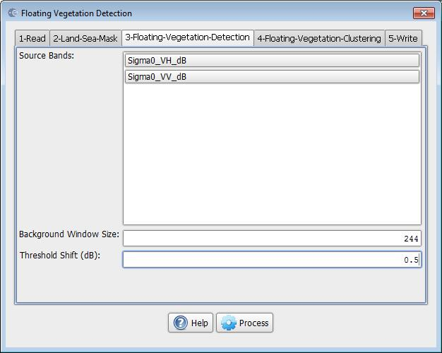
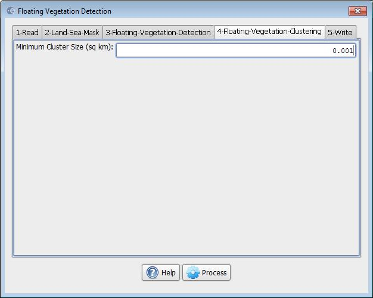

Floating Vegetation Detection
The operator detects bright spot such as floating or emergent vegetation on water surface from SAR calibrated imagery.
Major Processing Steps
The floating vegetation detection operation consists of the following four operations:
- Pre-processing: Calibration and speckle filtering are applied to source image in this step.
- Land-sea masking: Land-sea mask is created in this step to ensure that detection is focused only on area of interest, e.g., lake.
- Bright spot detection: Bright spots are detected in this step with an adaptive thresholding method.
- Clustering and discrimination:
Pixels detected as part of the bright spot are clustered and then eliminated based on the dimension of the cluster and user selected minimum cluster size.
For details of calibration and speckle filtering operations, the readers are referred to the Calibration operator and the Speckle Filter
operator.
Here it is assumed that the calibration and speckle filtering have
been performed applying the Floating Vegetation Detection operator.
For details of land-sea mask generation, the readers are referred to the Create Land Mask operator.
Adaptive Threshold Algorithm
The bright spots are detected using an adaptive thresholding method.
- Local mean backscatter level is estimated using pixels in a large window (user selected parameter for Background Window Size).
- Then Detection of backscatter (dB) threshold is set above the estimated local mean backscatter level. Pixels within the window with values higher than the threshold are detected as bright spot (user selected parameter).
- Window shifts across the defined lake area (mask) to next window position and repeats step 1 and 2.
Discrimination
- First the contiguous detected pixels are clustered into a single cluster.
- Then clusters with their sizes smaller than user selected Minimum Cluster Size are eliminated.
Visualize Detected Floating Vegetation
The floating vegetation detection result is a bitmap that identifies high backscatter areas (that are possibly floating vegetation). The bitmap mask is output as a separated band. To view the floating vegetation detection results, the following steps should be followed:
- Bring up the image.
- Go to Layer Manager and add the floating vegetation bitmap mask band as a layer.
Parameters Used
For bright spot detection, the following parameters are used (see Figure 1):
- Source Bands: All bands (real or virtual) of the source product. User can select one or more bands for producing multi-looked images. If no bands are selected, then by default all bands are selected.
- Background Window Size: The window size in pixels for computing local mean backscatter level.
- Threshold Shift (dB): The detecting threshold is higher than the local mean backscatter level by this amount.

Figure 1. Floating Vegetation Detection Operator dialog box.
For clustering and discrimination, the following parameters are used (see Figure 2):
- Minimum
Cluster Size: The minimum cluster size in square kilometer.
Cluster with size smaller than this size is eliminated.

Figure 2. Floating Vegetation Clustering operator dialog box.
Floating Vegetation Detection algorithm
Hatfield Consultants (http://www.hatfieldgroup.com/) modified the algorithm created for oil spill detection (Solberg, et al., 2004), that is available in ESA's open source software, the Sentinel-1 Toolbox. Hatfield incorporated the modified algorithm, a "Floating Vegetation Detection" (FVD) plugin to the Sentinel-1 Toolbox (v1.0.2) for detecting floating vegetation, e.g., possible water hyacinth using SAR calibrated data.
The detection method is based on the Oil Spill Detection algorithm, which aims to detect relatively low backscatter features on a water surface that could be due to specular reflection and smoothing of the water surface due to oil. The new FVD algorithm detects relatively bright areas on the water surface that could be emergent / floating objects.
Reference:
[1] A. S. Solberg, C. Brekke and R. Solberg, "Algorithms
for oil spill detection in Radarsat and ENVISAT SAR images",
Geoscience and Remote Sensing Symposium, 2004. IGARSS '04. Proceedings.
2004 IEEE International, 20-24 Sept. 2004, page 4909-4912, vol.7.